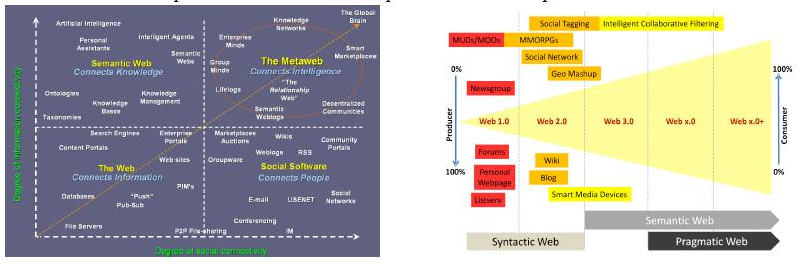
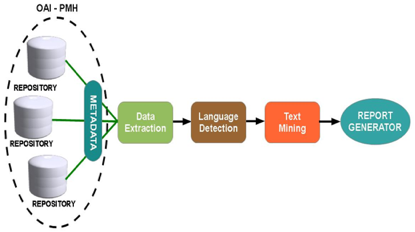
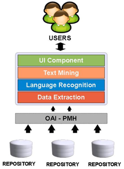

Recommender Systems¶
Introduction¶
The web has grown to be a visible part of the global-village; and its emergences as an important apparatus to break the diverse barriers across physical-variations and global-boundaries. The embracement of the web into our daily life activities in this contemporary period has become almost inevitable and quite numbers of populace rely on the web for different purpose range from placing on their view and read others view while also commenting on such views, e-learning, e-banking, e-library and e-commerce etc. The number of available documents on the web is enough to improve the diverse ways of educating and research need of the public now and then. The trail to learning on the web only necessitates knowing the best-way to explore and progress than reinventing the wheel for previously studied-aspect of knowledge.
In the future of internet, whose contours gradually become visible, these two developments - Big Data and The Internet of Things -are inextricably linked in a large and complex ecosystem. In this system, data is collected on the basis of our visited web pages, our activities in social networks, smart phones and through the many sensors of the physical world. It is this stream that forms the basis of Big Data. A data stream (or flow of different streams) basically, without interpretation, has less value, but based on analysis creates information that we can use, so the data becomes valuable. The outcome of the analysis - such as the Google car can also be converted directly in action without human intervention: a right turn or slow down for crossing cyclists (Vanderbilt, 2012). This internet is a perpetual motion machine of input and output which data is the raw material.
As more and more products and services have data as a vital component, the impact of this system become bigger and penetrates capillaries of our society. Not for nothing the U.S. government recently has announced around $ 200 million to invest in research on Big Data (Kalil, 2012). Therefore, it is important to better understand how the operation of this system works, the role of stakeholders and technologies and identifies its developments.
The way that this system is developed also raises important questions regarding the innovative power of the future internet. As described by Wheeler (2012) in his presentation, the web innovation shows how the development of the Internet has experienced in several phases.
todo: huge amount of data - Finding desired information from large data set is a difficult problem.
What are the strategy to solve decision making problem? Recommender Systems (RSs) are software tools and techniques providing suggestions for items to be of use to a user. It helps a user to make a decision.
In general, there are three types of recommender system:
- Collaborative recommender system is a system that produces its result based on past ratings of users with similar preferences
- Content based recommender system is a system that produces its result based on the similarity of the content of the documents or items.
- Knowledge based recommender system is a system that produces its result based on additional and means–end knowledge.
Description¶
Methodology¶
System Design Framework¶
System Description¶
Software Architecture¶
Approach¶
First a few general remarks as to the approach we have chosen.
Implementation¶
Setting up the development environment¶
Discovering the best tools, and learning how to use them effectively, takes time and effort. While that effort may be duly rewarded, spending weeks looking for and trying to configure software can be frustrating. This chapter describes setting up of our development enviroment.
Git¶
Git (ref) is an open source, distributed version control system. It is an extremely powerful tool and easy easy to start using. The latest version can be found on https://code.google.com/p/git-core/
Installing Git
Installing Git on CentOS
This section describes GIT installation on CentOS 5.6
Let’s start by logging into the server by using SSH. Login as root, for example a user with sudo access, is needed. First, we need to install a few dependencies Git needs. We can do this easily using yum:
yum -y install zlib-devel openssl-devel cpio expat-devel gettext-devel
Download the latest Git source code to the /usr/local/src directory and untar it:
wget wget http://git-core.googlecode.com/files/git-1.7.12.2.tar.gz tar xvfz git-1.7.12.2.tar.gz
Now we need to configure a makefile for the targeting system, compile the code and install it:
./configure make make install
Test it. Check it to make sure the installation is a success. Change to the home directory, create a new directory, and initialize it as a Git repository:
cd mkdir git-test cd git-test git init
A similar output message is shown by succes installation:
Initialized empty Git repository in /home/ekoi/git-test/.git/
Installing Git on Ubuntu
This section describes Git installation on Ubuntu 12.04. Installing Git with apt-get is a quick and easy process:
sudo apt-get install git
However, it is generally a good idea to install it from the source:
Download the most recent packages:
sudo apt-get update
Download the required dependancies:
sudo apt-get install libcurl4-gnutls-dev libexpat1-dev gettext libz-dev libssl-dev build-essential
Next, see the step 3 and 4 above.
Installing Git on Mac
To handle the installation on mac, MacPort or Homebrew can be used. The easiest way is by downloaded the dmg file from http://code.google.com/p/git-osx-installer/downloads/list
Installing Git on the Server
To run Git server, choosen which communication protocol is needed. Git provides four major network protocols: Local, Secure Shell (SSH), Git, and HTTP. The following steps describe installing Git server which the SSH protocol is chosen.
Create a user:
sudo adduser git su git cd mkdir .ssh mkdir repos
(the location of all git repositories)
- Add user ssh public key
Each user in the system must generate public key if they don’t already have one and add it to the authorized_keys file of git. For example, a key is received by mail, saved it to temporary file and append it to authorized_keys file:
cat /tmp/id_rsa.eko.pub >> ~/.ssh/authorized_keys
- Restrict the “git” user activity
To ensure that the git user can only use the SSH connection to doing Git activities , a limited shell tool that comes with Git can be used. So, the git user cannot have normal shell access to the server. So, the “git” user can only use push and pull Git repositories and cannot shell onto the machine. To use this, specify git-shell instead of default shell by editing the /etc/passwd file:
sudo vi /etc/passwd
At the bottom, there is a line that looks something like:
git:x:1003:1004:DANS GIT SERVER,,,:/home/git:/bin/sh
Change to:
git:x:1003:1004:DANS GIT SERVER,,,:/home/git:/usr/bin/git-shell
Working with Git (Methodology)
There is no standard way working on GIT, however, we are using the following workflow as stated on “Pragmatic Guide To GIT” (Swicegood, 2010) (ref)

Eclipse¶
Hadoop¶
Mahout¶
Walrus¶
References¶
People¶
Eko Indarto, developer at DANS
Dirk Roorda, researcher at DANS
Andrea Scharnhorst, senior researcher at DANS